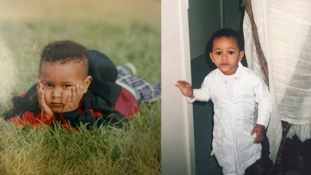
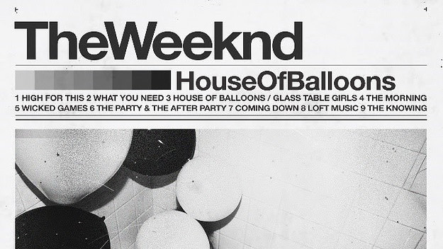
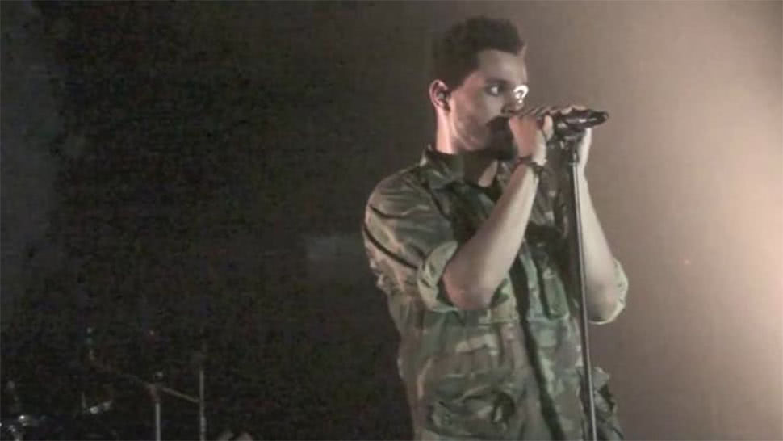
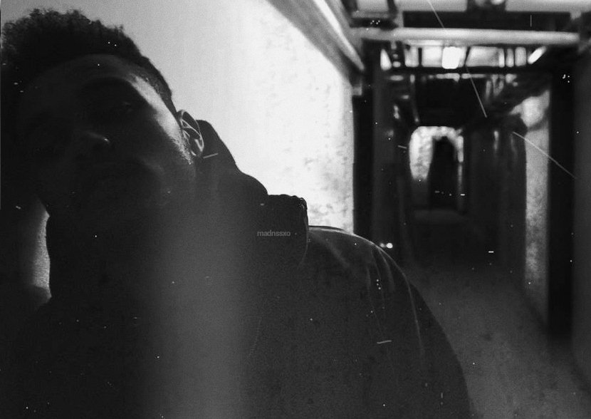
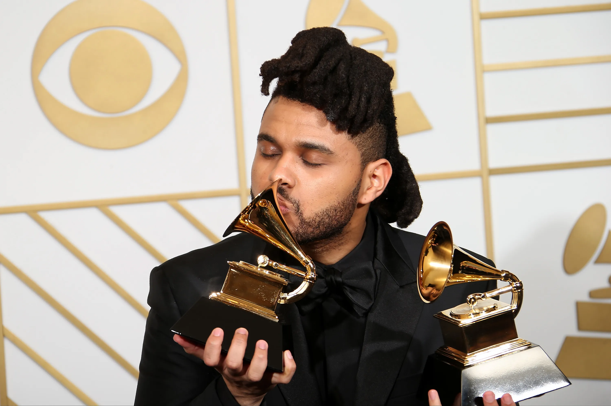
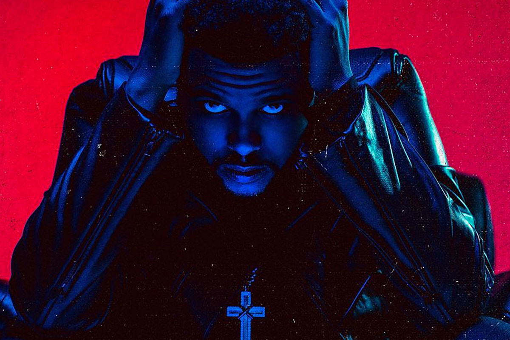
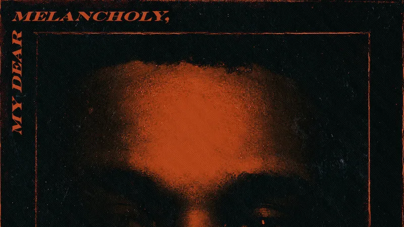
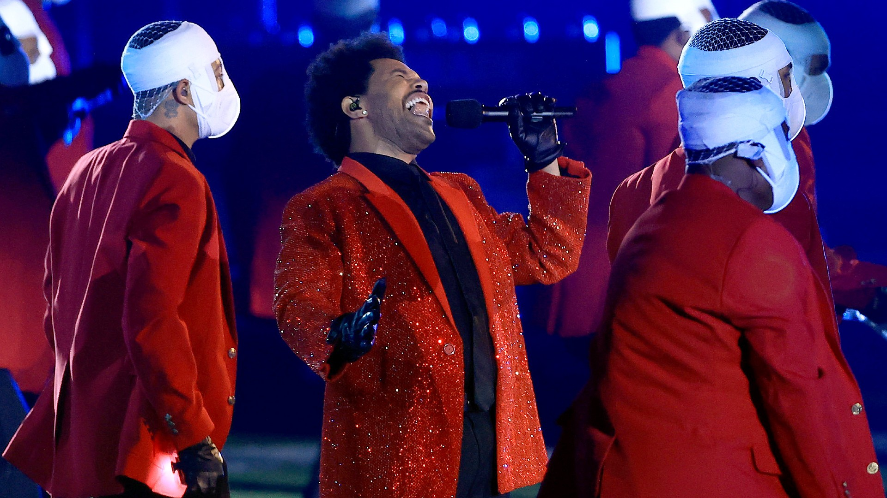

Who is the Weeknd?
Quick Facts
- Abel Makkonen Tesfaye, more known by stage name the Weeknd.
- 33 years old. Born on February 16, 1990. Sign, Aquarius.
- His accolades include 4 Grammy Awards.
- Has five studio albums, nine extended plays, three mixtapes, three compilation albums

Early Years
Abel Makkonen Tesfaye, but known professionally as the Weeknd,
is a Canadian singer, songwrite and record producer. He was born and raised in Toronto Ontario
and is the son of Ethiopian immigrants. The Weeknd's parents seperated when he was young, and he
grew up primarily with his grandmother and mother. His early musical influences ranged from traditional Ethiopian
music to also the King of Pop, Michael Jackson. In an interview with Vanity Fair,
the Weeknd specifically cited the impact of Jackson's 1979 hit "Don't Stop 'til You Get Enough," describing
it as "the song that helped me find my voice. It's the reason I sing.”

Youtube Uploads
After dropping out of highschool at the age of 17, Tesfaye always continued exploring his interest in music
and began his career in 2009 by anonymously releasing music on YouTube. On Feb. 24, 2011, he uploaded three songs
to YouTube under the username “xoxxxoooxo.” No identifying name or photos were associated with the account, other
than a curiously misspelled band name: The Weeknd. Two weeks later, one of the songs,
What you need, appeared
on the notorious indie-music review site Pitchfork as a “Best New Track.”
His First Mixtape
The Weeknd was gaining attention. Not just because his voice sounded like a reincarnated Michael Jackson, but
because of mystery clinging to those YouTube videos was captivating. Everyone wanted to know who was behind this
new sound. Within a month, a full free download mixtape was released with the title House of Balloons.

His First performance
Just 5 months after his YouTube debut, on July 24th, for the first time ever, he performed at the small venue Mod Club in his
hometown Toronto. He performed to an eager crowd. Starting things off with his track 'High For This', he's visibly nervous,
yet manages to blow everyone away with his sound. He wanted it to be as low key as possible. The flyer of the event stated that there
were to be no cameras allowd. So that no photos or videos could be taken. Although this didn't work out. As there are plenty photo's taken
of him on stage that night and you can watch the full performance on
Youtube as well. But his mystery continued
with the appearance. Fellow Canadian rapper Drake is also in the audience, and approaches Tesfaye later to suggest the pair work together.

Trilogy
He then, released two more mixtapes "Thursday" and "Echoes of Silence." The Weeknd decided to gather those two with "House of Balloons"
and create his first three-disc album "Trilogy." This helped push his career forward. As he worked with Drake on his 2011 album, Take Care,
which featured several tracks from House of Balloons, and landed a deal with Universal's Republic Records.
Up until now the artist still refused interviews, nor did he make many other public appearances. But he finally sat down with
Complex Magazine. When asked if his " mystery" was intentional, the Weeknd replied: Yes and no. In the beginning, I was
very insecure. I hated how I looked in pictures ... I was very camera shy. People like hot girls, so I put my music to hot
girls and it just became a trend ... I just ran with it. No one could find pictures of me. It reminded me of some villain sh*t.
But you can't escape the Internet.

Kiss Land & BBTM
He explored dark wave in his debut studio album Kiss Land (2013), which debuted at number two on the US Billboard 200.
In addition to his own work, the Weeknd started collabrating with other artists. For example: he appeared on Wiz Khalifa's
“Remember You” song in 2012 and worked with Rick Ross on his 2014 album, Mastermind. That same year, the Weeknd also helped
producer Max Martin with Ariana Grande's hit “Love Me Harder,”
After, Tesfaye began contributing to film soundtracks, with his acclaimed single "Earned It" which was the first single
released from the Fifty Shades of Grey soundtrack. In 2015, the Weeknd continued his rise to the top with the No. 1 album
Beauty Behind the Madness. Specially his disco-pop infused single “Can't Feel My Face,” which could be about a romantic
experience or drug use, became for many the unofficial song of the summer, while his ballad “The Hills” also made quite
an impression on fans. This well-received record helped the Weeknd rack up an impressive seven nominations for the 2016
Grammy Awards, winning for Best R&B Performance for "Earned It" and Best Urban Contemporary Album.

Starboy and collabrations
In November 2016, the Weeknd released his third album, Starboy. Along with guest appearances Lana Del Rey,
Future and Kendrick Lamar, duo Daft Punk, who collaborated on the chart-topping title track "I Feel It Coming."
which has received diamond certifications. This trap-infused album saw similar commercial success and included the US number-one
single "Starboy" and "Die for You", and won the Grammy Award for Best Urban Contemporary Album.
The former and latter singles both reached number one in the US and all three singles also received multi-platinum certifications. which
was a success.
The following year, the Weeknd reciprocated some of the guest contributions by appearing on therir albums. For example: Lana Del Rey
and Future. He then took home the Best Urban Contemporary Album Grammy for Starboy in early 2018.

Dear Melancholy & After Hours
In March 2018, the Weeknd dropped My Dear Melancholy. Featuring the single "Call Out My Name," and this EP made a
return to the darker, gloomier sound. So My Dear Melancholy is described as a return to the darker style of the Weeknd's
earlier work, evident in Trilogy (2012) and Kiss Land (2013). The extended play was supported by the single, "Call Out My Name",
which peaked at number four on the US Billboard Hot 100. It received generally favourable reviews and debuted at number one on
the US Billboard 200. Shortly after, the Weeknd headlined Coachella Valley Music and Arts Festival,
along with Beyoncé and Eminem.
In 2019 The Weeknd returned to the spotlight by making his feature film debut in the Adam Sandler flick "Uncut Gems." Later that
year he was back to making headlines with his music, dropping the singles "Heartless" — which became his fourth track to top the
Billboard Hot 100 — and "Blinding Lights," ahead of the March 2020 release of the album After Hours.

Super Bowl
In November 2020 it was announced that the Weeknd would perform at the 2021 Super Bowl In Tampa, Florida.
Marking the first time a Canadian solo artist headlined the Super Bowl halftime show. The performance was
rumored to last for 24 minutes according to an interview the Weeknd had with Billboard. However, representatives
for the singer-songwriter denied the rumor, stating that it would actually be "roughly 12-13 minutes long".
When asked about preparations for the show, the Weeknd stated, "We've been really focusing on dialing in on the
fans at home and making performances a cinematic experience, and we want to do that with the Super Bowl." He contributed
$7 million to the halftime performance
